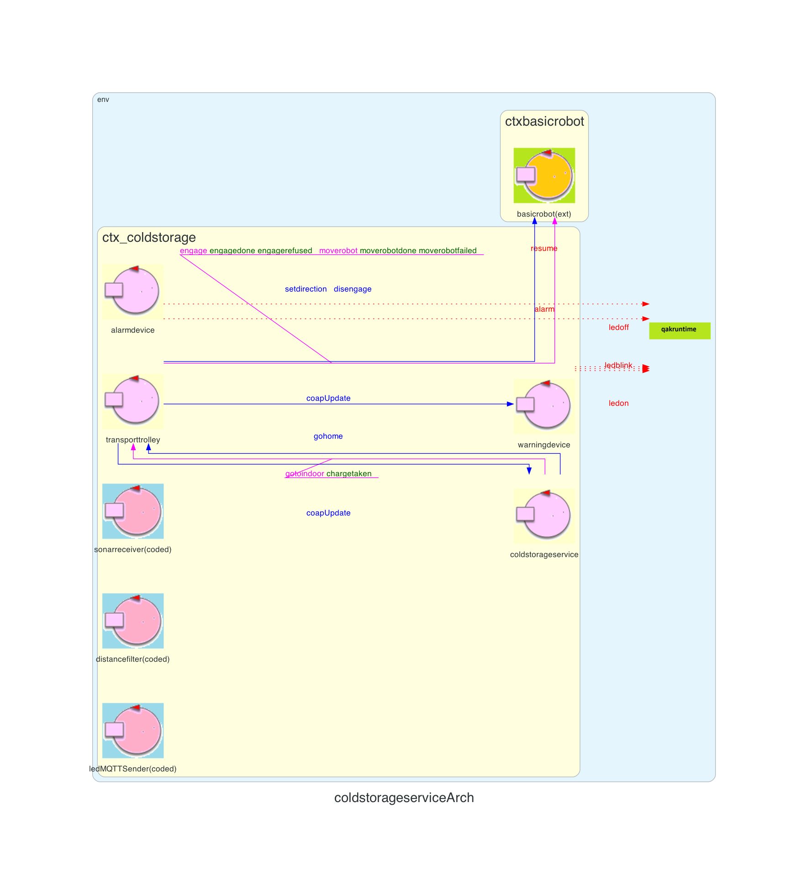

Introduction
Lo Sprint4 va a completare gli elementi principali del sistema individuati nello Sprint0, introducendo la StatusGui e testando in toto il servizio.Requirements
Descrizione del
TemaFinale23
Goals Sprint 4
Si definiscono in seguito i goal relativi allo Sprint4, come delineati alla fine dello Sprint3:
Si definiscono in seguito i goal relativi allo Sprint4, come delineati alla fine dello Sprint3:
- Identificare ed analizzare tutti i problemi relativi ai requisiti che coinvolgono la ServiceStatusGUI
- Integrare al sistema realizzato nello Sprint3 la ServiceStatusGUI
- Realizzare l'interfaccia grafica
- Testare il sistema
Chiarimenti del committente
L'interazione con il committente e altri analisti ha messo alla luce un problema: l'attesa troppo lunga tra l'inserimento del Ticket da parte di un Truck Driver e la risposta di presa in carico del Transport Trolley. Per affrontarla, aggiungiamo allo Sprint4 un goal: analizzare la problematica e implementare un modo per risolverla.Requirement analysis
Sistema
Questo ultimo Sprint ha come prodotto finale il sistema identificato dallo Sprint0. Nella seguente foto vengono riportati i macro-componenti del sistema complessivo:
In questo caso viene introdotta la ServiceStatusGUI che si impegnerà a mostrare lo stato del servizio ColdStorageService.
Analisi
Dai requisiti espressi nel Tema Finale e dalle analisi già effettuate nei precedenti sprint, in questo Sprint4 occorre analizzare la ServiceStatusGUI che è definita come interfaccia utile per mostrare all'addetto della supervisione, detto Service Manager, i dati utili per monitorare il sistema.Ai fini di sorveglianza si ritengono valide mostrare le seguenti informazioni:
- Peso fisico corrente effettivamente presente nella ColdRoom
- Peso prenotato ma non ancora presente nella ColdRoom
- La posizione del TransportTrolley sulla mappa
- Lo stato del TransportTrolley
- Numero di richieste di store rifiutate dall'avvio del sistema
La ServiceStatusGUI dovrà mostrare: il peso fisico corrente, il peso
prenotato,
la posizione e lo stato del TransportTrolley, numero di richieste store rifiutate dall'avvio del
sistema.
Analisi del Problema
Soluzione: per la comunicazione delle informazioni che descrivono lo stato del nostro sistema si adotta il pattern Observer.
La ServiceStatusGUI adotta il pattern Observer per ascoltare gli
aggiornamenti prodotti dagli attori
di suo interesse
Soluzione: tutti i dati che vengono comunicati permettono di informare il Service Manager in modo completo dello stato del sistema, tranne per quanto riguarda la posizione in tempo reale del transportrolley. Questo succede perchè non avendo accesso diretto all'attore robotpos, presente all'interno del basicrobot23 offerto dal committente, le uniche informazioni che si riescono a raccogliere sono le posizioni del TransportTrolley sulla mappa solo all'inizio e alla fine di una mossa moverobot(coordinate).
Esposti questi fatti si può agire in due modi differenti:
- Essere soddisfatti di questo livello di precisione e mostrare in modo accurato la posizione del TransportTrolley quando questo è fermo, e qualora si trovi in movimento ci si limita a comunicare la partenza e la destinazione, potenzialmente con l'aggiunta di una notifica ogni volta che questo effettua uno step.
- Se si fosse a conoscenza del percorso da effettuare grazie al planner, e conoscendo quando il TransportTrolley effettua uno step, si potrebbe ricostruire la sua posizione in coordinate sulla mappa.
- Se si può modificare il basicrobot23: si aggiungerebbe al Qak relativo le updateResources quando viene fatta ogni mossa.
- Se non si può toccare il basicrobot23 e quindi svolgere il punto 2. Un ostacolo che non ci permette i seguire questa strada è che data la attuale situazione il piano del che il TransportTrolley dovrà eseguire viene reso noto solo a posteriori.
La posizione del TransportTrolley durante il suo movimento saranno mostrare
solo partenza e destinazione, con
l'aggiunta di una notifica ogni volta che uno step viene effettuato.
Soluzione: il TransportTrolley avrà gli stessi stati identificati durante l'analisi dello Sprint3, quindi:
- In HOME -> HOME
- In movimento -> MOVING
- Fermo -> STOPPED
Il TransportTrolley si potrà trovare in tre stati: HOME, MOVING, STOPPED.
Non è pensabile che l'autista debba aspettare che il DDR Robot compia il tragitto per raggiungere la Indoor e che carichi il carico prima di ricevere una risposta affermativa di corretto inserimento del Ticket (rischiando che un errore o un guasto nel processo blocchi il sistema).
Separare in due momenti questa interazione porterebbe a una maggiore chiarezza del servizio, che potrebbe così confermare la validità del Ticket subito e confermare l'avvenuto carico in seguito.
Soluzione: va ripensata l'interazione tra ColdStorageService e ServiceAccessGUI, lasciando che la Reply all'inserimento del Ticket sia semplicmente una conferma della corretezza dello stesso. Per comunicare che il carico è stato correttamente caricato e che il driver può allontanarsi, si invia questa informazione con un update che verrà osservato dalla gui e poi smistato al giusto client connesso. Così facendo si solleva la Gui (o il driver stesso) dalla responsabilità di interrogare potenzialmente più volte il servizio per sapere se l'operazione è andata a buon fine.
Si sceglie di non usare un Dispatch perchè l'informazione ChargeTaken potrebbe essere di interesse anche ad altri componenti, come ad esempio la StatusGUI.
La ServiceAccessGUI riceve una Reply che comunica se il Ticket inserito è
corretto, e un Update quando il TransportTrolley ha terminato di caricare.
Soluzione: Alla richiesta di un Ticket viene prenotato del peso all'interno della ColdRoom. Dal momento che i requisiti impongono una scadenza del Ticket dopo TICKETTIME secondi, è già stato implementato un meccanismo che valida i ticket giudicando scaduti quelli che hanno superato il tempo limite. Tuttavia questo controllo avviene quando viene effettuata l'operazione Send Ticket, ciò fa si che se un Truck Driver non dovesse mai presentarsi il peso rimarrebbe prenotato senza mai essere effettivamente occupato. Per risolvere questo problema si è deciso, ogni qualvolta la ColdStorageService va nello stato "IDLE", di controllare tutti i Ticket in attesa liberando lo spazio occupato dai Ticket scaduti, lasciandoli tuttavia logicamente ancora validi. Questa decisione è stata effettuata poichè se un Truck Driver dovesse presentarsi dopo che il suo Ticket è stato invalidato, ottiene il corretto messaggio di errore, al contrario se il Ticket venisse eliminato, otterrebbe un errore non corretto.
Ogni volta che la ColdStorageService si trova nello stato IDLE, viene effettuato un controllo di tutti i Ticket validi per identificare quelli scaduti e liberare lo spazio (prenotato) nella ColdRoom
Informazioni osservate
Tutti i seguenti messaggi sono prodotti grazie al pattern Observer:| Messaggio | Attore ascoltato | Descrizione |
|---|---|---|
| coapUpdate | transportrolley | Informa la ServiceStatusGUI dello stato del TransportTrolley |
| coapUpdate | basicrobot23 | Informa la ServiceStatusGUI della posizione del TransportTrolley sulla mappa |
| coapUpdate | ColdStorageService | Informa la ServiceStatusGUI del peso fisico presente all'interno della ColdRoom |
| coapUpdate | ColdStorageService | Informa la ServiceStatusGUI del peso prenotato ma ancora non presente nella ColdRoom |
| coapUpdate | ColdStorageService | Informa la ServiceStatusGUI della quantità di richieste di storage rifiutate dall'avvio del sistema |
Architettura logica
Codice QAK per la modellazione del sistema: SonarLed.qak
Il sistema da noi modellato presenta la seguente architettura logica:

Test plans
| Test | Entità coinvolte | Scenario | Comportamento atteso |
|---|---|---|---|
| TestAlarm | ServiceStatusGUI | Il sonar rileva una distanza minore di DLIMT e viene scatenato l'evento alarm per fermare il TransportTrolley | La ServiceStatusGUI mostra che il robot si è fermato |
| TestRquestStorage | ServiceStatusGUI | Viene effettuata una richiesta di storage | Il peso prenotato si aggiorna di una quantità pari a quella della storerequest |
| TestInsertTicket | ServiceStatusGUI | Viene effettuata una richiesta isolata di insertticket | Ci si aspetta che il robot giunga alla posizione di INDOOR, direzionarsi po alla PORT, aggiornare sia il peso prenotato che quello fisico, ed infine dirigersi verso alla HOME |
| TestRefusedRequest | ServiceStatusGUI | La ColdRoom si trova con lo spazio esaurito ed una richiesta di storage viene effettuata | Il contatore di richieste di storage rifiutate deve essere incrementato di 1 |
Project
Per progettare la ServiceStatusGUI si è fatto tesoro del lavoro già svolto per la AccessGUI, con cui condivide la tecnologia di base: Spring.Delineiamo anche per questo componente due tipi diversi di connessioni: quelle tra Client e Server Spring e quelle tra il Server Spring e ColdStorageService.
Le classi che ci serviranno saranno quindi:
- Application, il main del programma che istruirà Spring di avviare l'applicazione
- WebSocketConfiguration, dove definiremo due tipi di Handler: Client (comunicazione C/S) e Actor (comunicazione Server/QaK)
- ClientHandler, che manterrà le sessioni con i Client connessi, intercettando le richieste e inoltrando le risposte
- ActorHandler, che scambierà messaggi con il ColdStorageService
- Controller, che gestirà le pagine web mostrate ai client (path degli url, eventuali variabili, etc...)
Le informazioni non verranno inviate direttamente dal ColdStorageService, bensì aggiornate nel corso dell'esecuzione e osservate dalla statusGUI.
Come per la ServiceAccessGUI, un file JavaScript renderà l'interfaccia web in grado di interagire con Spring.
Alcune modifiche sono state poi necessarie per quanto riguarda la ServiceAccessGUI, in particolare per supportare la nuova interazione relativa al messaggio ChargeTaken. Oltre a supportare la funzionalità descritta in sede di analisi, è stata riscritta la logica di gestione Ticket rendendola più precisa per quanto riguarda i possibili scenari e i messaggi scambiati, risolvendo così anche un comportamento anomalo riscontrato riguardante il conteggio del peso prenotato.
Conclusioni
Questo Sprint produce il sistema finale richiesto dal committente nel TemaFinale23I componenti dialogano e interoperano in maniera coerente ai requisiti, fornendo un servizio che riteniamo completo di tutte le feature richieste.
Oltre a una serie di ulteriori test operativi per verificare la robustezza del sistema, possono essere identificati alcuni sviluppi futuri:
- Aggiunta supporto a gestione esterna o condivisa della ColdRoom
- Migliore estindibilità del sistema, ad esempio aggiungendo il supporto a un numero qualunque di Robot e zone di carico/scarico
- Introduzione sistema di autenticazione per Driver e Service Manager
- Miglioramento generale delle interfacce grafiche
Gli output dello sprint4 sono:
- ServiceStatusGUI
- Versione aggiornata ServiceAccessGUI
- Versione aggiornata ColdStorageService
By
Tassinari Gabriele, email: gabriele.tassinari2@studio.unibo.it
Baraldi Leonardo, email: leonardo.baraldi@studio.unibo.it
Koss Krystian, email: krystian.koss@studio.unibo.it


GIT repo: https://github.com/4utotune/ColdStorageService/
Tassinari Gabriele, email: gabriele.tassinari2@studio.unibo.it
Baraldi Leonardo, email: leonardo.baraldi@studio.unibo.it
Koss Krystian, email: krystian.koss@studio.unibo.it
GIT repo: https://github.com/4utotune/ColdStorageService/